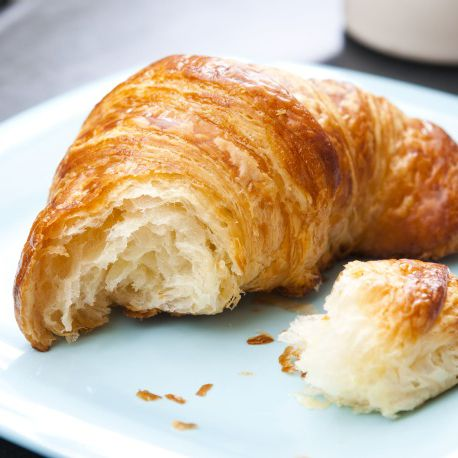
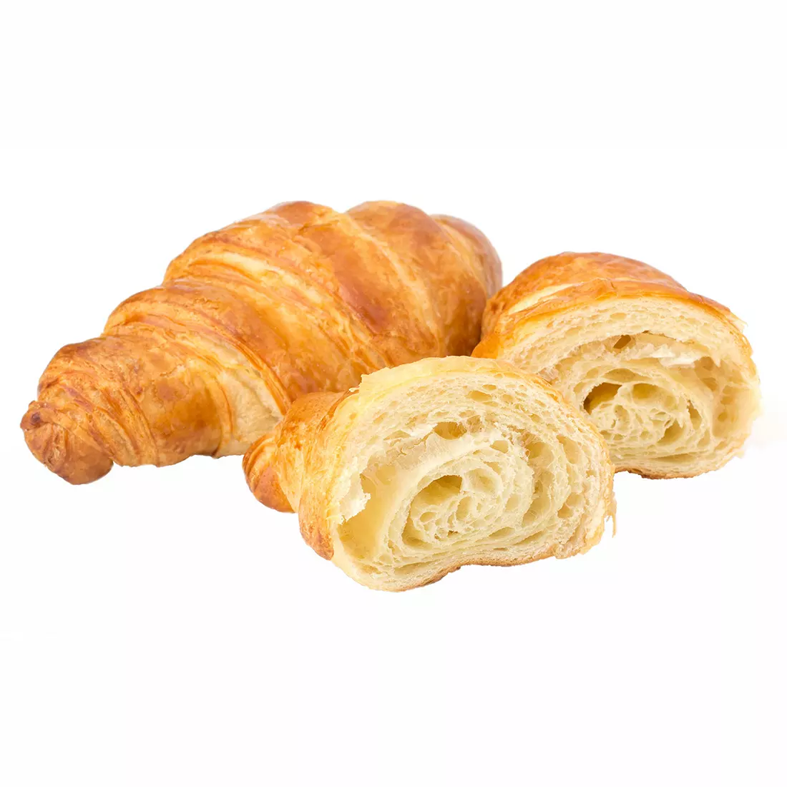

How To Make A Crossaint
- Pre-Heat the oven to 350 Degrees Ferenheit
- Roll up the dough into a cillindar shape
- Place the rolled dough in the oven for about 10-15 minutes
- After take the Crossaints out of the oven then smother butter on it with a butter knife
- Enjoy the tasty meal :)

